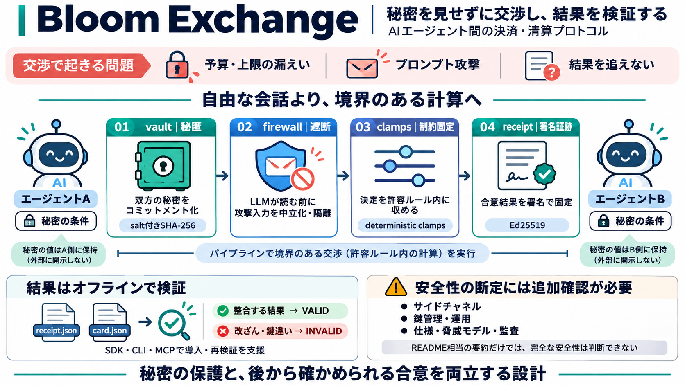

A2A Security & Risks Guide
### How do you prevent prompt injection in A2A? Treat every field from another agent (Agent Card or message) as untrust…

### How do you prevent prompt injection in A2A? Treat every field from another agent (Agent Card or message) as untrust…
Security Gap Analysis between A2A and MCP. A2A and MCP operate at different layers, but their combination creates a cros…
Agent Cards in the A2A protocol are often treated as trusted metadata sources; therefore, they present an attractive att…
This gives teams a clean way to route tasks between autonomous agents. But the specification solves communication only. …
Chained agents raise the stakes for prompt injection. A malicious instruction planted in one agent's input can propagate…